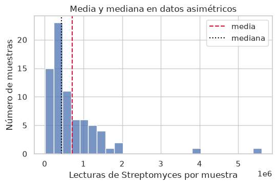
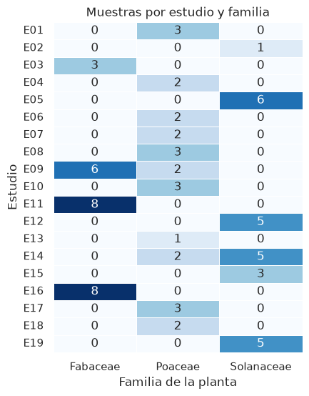
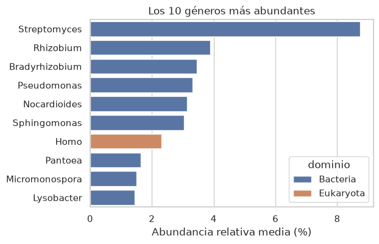
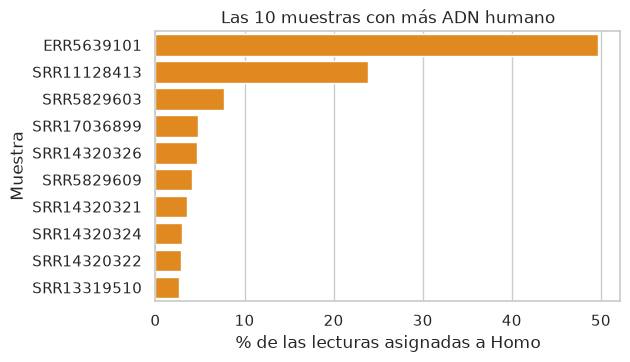
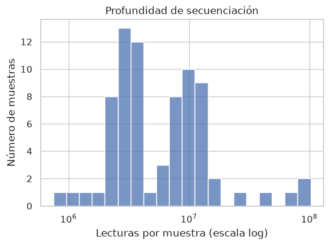
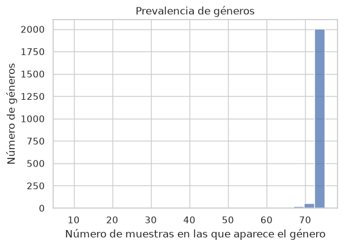
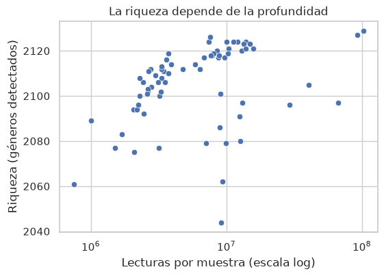
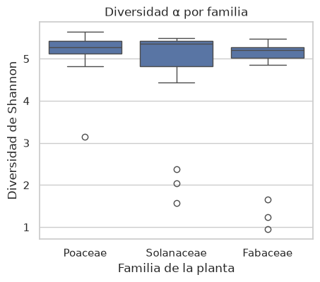
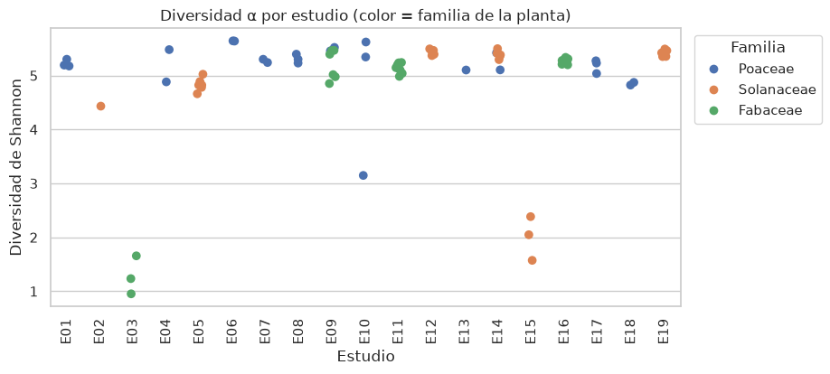

¿Qué es una tabla de abundancia de metagenomas y cómo se carga en Python?
¿Qué problemas típicos aparecen al explorar datos reales de microbiomas?
¿Podemos comparar plantas cuando cada estudio muestreó una sola familia?
NotaObjetivos
Al completar esta lección, serás capaz de:
Distinguir tipos de datos y variables, y calcular medidas de resumen básicas con pandas.
Explicar qué es una tabla de abundancia de metagenomas y el formato BIOM, y cargarlos en Python.
Explorar un conjunto real de microbiomas: dimensiones, profundidad de secuenciación, prevalencia de taxones, contenido de la tabla y diversidad α.
Reconocer problemas típicos de datos reales (contaminación del hospedero, heterogeneidad técnica) y la diferencia entre efecto de la planta y efecto del estudio.
Tip🧪 Cómo trabajar este capítulo
Escribimos el código juntos, en vivo. Abre tu notebook antes de empezar:
Abrir en Colab
Sin instalar nada: ábrelo en Google Colab con el botón de arriba y guarda una copia (Archivo → Guardar una copia en Drive) para conservar lo que escribas.
En esta página, los bloques de código que empiezan con ⌨️ son los que escribimos juntos; el código de las gráficas viene plegado (Ver el código de la gráfica) y ya está escrito en tu notebook. Si te atrasas, copia el código del Etherpad o ejecuta la celda 🛟 Ponerse al día más cercana.
Trabajamos con 75 metagenomas de rizósfera de cultivos de tres familias de plantas (Poaceae, Solanaceae y Fabaceae; 25 muestras de cada una), provenientes de 19 estudios publicados. Son un subconjunto de la base de datos MicroAgroBiome (Aguilar et al. 2026) (https://agrobiom.matmor.unam.mx). La celda de Setup del notebook descarga y prepara los archivos; después los cargamos:
Código
# ⌨️ Carga la tabla BIOM, conviértela en DataFrame (muestras en filas) y lee los metadatosbiom_table = biom.load_table(SUBSET_PATH +"taller_genus.biom")abundance_table = biom_table.to_dataframe(dense=True).T.round().astype("int64")abundance_table.index.name ="sample_id"metadata_df = pd.read_csv(SUBSET_PATH +"taller_metadata.csv", index_col=0)abundance_table.shape, metadata_df.shape
((75, 3330), (75, 21))
abundance_table tiene una fila por muestra y una columna por género; metadata_df, una fila por muestra y una columna por cada dato que conocemos de ella.
2.2 Fundamentos del análisis de datos
Tipos de análisis:
Descriptivo: resumir lo que hay en los datos (medias, proporciones, gráficas).
Exploratorio: buscar patrones, relaciones y anomalías sin una hipótesis fija de antemano.
Inferencial: generalizar de una muestra a una población y probar hipótesis.
Estructura de un dataset tabular: cada fila es una observación (una muestra) y cada columna es una variable.
Código
# ⌨️ Dimensiones de la tabla de abundancia: (filas, columnas)abundance_table.shape
(75, 3330)
Código
# ⌨️ Primeras 5 muestras y 6 géneros (para que quepa en pantalla)abundance_table.iloc[:5, :6]
Lactiplantibacillus
Lactobacillus
Ligilactobacillus
Limosilactobacillus
Companilactobacillus
Leuconostoc
sample_id
SRR12192850
87
150
66
152
27
156
SRR13062011
58
120
45
134
27
37
SRR11128413
63
317
140
108
101
140
SRR12964294
64
215
85
190
39
46
SRR12192805
55
154
57
151
26
46
Las variables pueden ser numéricas (valores medibles) o categóricas (un número limitado de categorías). pandas las distingue con .dtypes:
Código
# ⌨️ Tipo de dato de cada columnametadata_df[cols].dtypes
host_name_family str
host_name str
country str
year float64
latitude float64
doi str
dtype: object
Código
# ⌨️ Primeras filas de esas columnasmetadata_df[cols].head()
host_name_family
host_name
country
year
latitude
doi
sample_id
SRR12192850
Poaceae
Maize
South Africa
2021.0
-26.110000
10.3390/microorganisms9071419
SRR13062011
Poaceae
Maize
South Africa
2021.0
-25.994667
10.1128/MRA.01309-20
SRR11128413
Poaceae
Maize
South Africa
2020.0
-25.789989
10.1186/s13213-020-01591-8
SRR12964294
Poaceae
Maize
South Africa
2021.0
-26.152000
10.1007/s00203-021-02354-y
SRR12192805
Poaceae
Maize
South Africa
2020.0
-25.590000
10.1128/MRA.00860-20
Medidas de resumen para variables numéricas:
Media: promedio.
Mediana: valor central; es menos sensible a valores extremos.
Desviación estándar: qué tan dispersos están los valores respecto a la media.
Código
# ⌨️ Media, mediana y desviación estándar de un génerogenus ="Streptomyces"print(abundance_table[genus].mean())print(abundance_table[genus].median())print(abundance_table[genus].std())
708963.4266666666
434022.0
824188.1510320154
Importante🔮 Predice antes de ver la gráfica
En la siguiente figura marcamos la media y la mediana de Streptomyces. ¿Cuál quedará más a la derecha? ¿Por qué?
Cuando unas pocas muestras tienen muchísimas lecturas, la media se va hacia ellas y se separa de la mediana (Figura 2.1).
Ver el código de la gráfica
fig, ax = plt.subplots(figsize=(6, 3.5))sns.histplot(abundance_table[genus], bins=25, ax=ax)ax.axvline(abundance_table[genus].mean(), color="crimson", linestyle="--", label="media")ax.axvline(abundance_table[genus].median(), color="black", linestyle=":", label="mediana")ax.set_xlabel(f"Lecturas de {genus} por muestra")ax.set_ylabel("Número de muestras")ax.set_title("Media y mediana en datos asimétricos")ax.legend()plt.show()

Figura 2.1: Media y mediana de los conteos de Streptomyces: en datos asimétricos la media se aleja de la mediana.
.describe() calcula varias medidas de resumen a la vez:
Código
# ⌨️ Resumen de varias variables numéricas a la vezmetadata_df[["year", "latitude", "longitude", "fraction_resolved"]].describe().round(3)
year
latitude
longitude
fraction_resolved
count
75.000
75.000
75.000
75.000
mean
2021.253
12.348
25.900
0.940
std
1.306
30.934
81.936
0.016
min
2016.000
-28.454
-121.700
0.899
25%
2021.000
-26.110
4.204
0.934
50%
2021.000
26.075
26.797
0.939
75%
2022.000
37.500
118.520
0.942
max
2023.000
56.000
127.970
0.993
Tip✏️ Ejercicio 1: Media y desviación estándar de un género (5 min)
Calcula la media y la desviación estándar de los conteos del género Pseudomonas con .mean() y .std(). Reemplaza TU_CODIGO_AQUI por tu código.
La desviación estándar es varias veces mayor que la media: los conteos crudos varían muchísimo entre muestras. Parte de esa variación no es biológica, sino de cuánto se secuenció cada muestra; lo vemos más adelante, en Profundidad de secuenciación.
2.3 De las lecturas a una tabla de abundancia
2.3.1 ¿Qué es un microbioma?
Un microbioma es el conjunto de microorganismos (bacterias, arqueas, hongos, virus…) que habitan un ambiente. En este curso, la rizósfera: el suelo que rodea e influye las raíces de una planta. Estudiarlo permite entender cómo las plantas y su entorno moldean las comunidades microbianas.
2.3.2 Metagenomas y tablas de abundancia
Un metagenoma (secuenciación shotgun) secuencia fragmentos de ADN de toda la comunidad. Cada fragmento (lectura) se compara con una base de datos de referencia para asignarlo a un taxón (un grupo con nombre: un género, una especie…). Contar cuántas lecturas cayeron en cada taxón da la tabla de abundancia:
Filas: muestras.
Columnas: taxones; en este curso, géneros.
Valores: número de lecturas asignadas a ese género en esa muestra.
Nota¿Y los OTU/ASV?
En datos de amplicones (16S) se habla de OTU/ASV. Aquí no los usamos: las unidades son taxones asignados directamente por nombre.
2.3.3 Rangos taxonómicos
Cada taxón se ubica en una jerarquía: dominio → filo → clase → orden → familia → género → especie. Los datos originales llegaban hasta especie; para el curso colapsamos a género sumando las lecturas de todas las especies de cada género. Se descarta la pequeña fracción de lecturas que solo se pudo asignar a rangos más altos.
2.3.4 El formato BIOM
Los datos se distribuyen en formato BIOM (Biological Observation Matrix): guarda los conteos de forma eficiente junto con metadatos de los taxones (su linaje) y de las muestras. En BIOM, los taxones se llaman observaciones:
Código
# ⌨️ Los primeros 5 géneros (en BIOM se llaman "observaciones")biom_table.ids(axis="observation")[:5]
Tres variables del metadato serán centrales: la planta hospedera (host_name, agrupada en host_name_family), el estudio de origen (doi) y el país (Tabla 2.1).
Código
# ⌨️ ¿Qué plantas hay en cada familia? Tabla cruzada de dos columnas del metadatopd.crosstab(metadata_df["host_name_family"], metadata_df["host_name"])
Tabla 2.1: Plantas hospederas incluidas en cada familia.
host_name
Common bean
Gramineae
Maize
Pea
Peanut
Purple bush-bean
Red pepper
Sorghum
Soya bean
Tomato
Wheat
host_name_family
Fabaceae
2
0
0
3
8
1
0
0
11
0
0
Poaceae
0
2
17
0
0
0
0
4
0
0
2
Solanaceae
0
0
0
0
0
0
4
0
0
21
0
Para analizar por planta, unimos conteos y metadatos por su índice común, sample_id:
Código
# ⌨️ Une conteos y metadatos por el índice común (sample_id)merged_table = abundance_table.join(metadata_df)merged_table[["Streptomyces", "Rhizobium", "host_name_family", "host_name"]].head()
Streptomyces
Rhizobium
host_name_family
host_name
sample_id
SRR12192850
354268
22428
Poaceae
Maize
SRR13062011
230493
20032
Poaceae
Maize
SRR11128413
7900
1692
Poaceae
Maize
SRR12964294
434022
26746
Poaceae
Maize
SRR12192805
278332
16203
Poaceae
Maize
Tip✏️ Ejercicio 2: Filtrar por familia de planta (5 min)
A partir de merged_table, filtra solo las muestras de la familia "Fabaceae" (leguminosas) y cuenta cuántas hay.
Antes de comparar plantas hay que preguntar: ¿cuántas familias de planta aporta cada estudio? Una tabla cruzada cuenta las muestras de cada combinación:
Código
# ⌨️ Tabla cruzada: número de muestras por estudio y familia de plantastudy_family = pd.crosstab(metadata_df["study_id"], metadata_df["host_name_family"])study_family.head()
host_name_family
Fabaceae
Poaceae
Solanaceae
study_id
E01
0
3
0
E02
0
0
1
E03
3
0
0
E04
0
2
0
E05
0
0
6
Ver el código de la gráfica
fig, ax = plt.subplots(figsize=(4.5, 6))sns.heatmap(study_family, annot=True, fmt="d", cmap="Blues", cbar=False, linewidths=0.5, ax=ax)ax.set_xlabel("Familia de la planta")ax.set_ylabel("Estudio")ax.set_title("Muestras por estudio y familia")plt.show()families_per_study = study_family.gt(0).sum(axis=1)print("Estudios según el número de familias de planta que incluyen:")print(families_per_study.value_counts().sort_index())

Figura 2.2: Número de muestras por estudio y familia de planta: casi cada estudio muestreó una sola familia.
Estudios según el número de familias de planta que incluyen:
1 17
2 2
Name: count, dtype: int64
Casi cada estudio muestreó una sola familia de planta (Figura 2.2). Eso significa que planta y estudio (con su laboratorio, su suelo y su protocolo) están entrelazados: si dos familias se ven distintas, no sabremos si es por la planta o por el estudio. Es la pregunta central de la Lección 2.
2.4.2 ¿Qué contiene realmente la tabla?
Para comparar muestras con profundidades distintas usamos abundancias relativas: cada conteo dividido entre el total de lecturas de su muestra.
Importante🔮 Predice antes de ejecutar
Después de dividir cada conteo entre el total de su muestra, ¿cuánto debería sumar cada fila?
Código
# ⌨️ Abundancia relativa: cada conteo entre el total de lecturas de su muestrarelative_raw = abundance_table.div(abundance_table.sum(axis=1), axis=0)relative_raw.sum(axis=1).head()
Revisar de qué organismos son las lecturas evita sorpresas (Figura 2.3).
Ver el código de la gráfica
# Los 10 géneros más abundantes (promedio entre muestras), coloreados por dominiotop_genera = (relative_raw.mean() *100).sort_values(ascending=False).head(10)top_df = pd.DataFrame({"genero": top_genera.index, "abundancia": top_genera.values,"dominio": taxonomy_df.loc[top_genera.index, "domain"].to_numpy()})fig, ax = plt.subplots(figsize=(6, 4))sns.barplot(data=top_df, y="genero", x="abundancia", hue="dominio", dodge=False, ax=ax)ax.set_xlabel("Abundancia relativa media (%)")ax.set_ylabel("")ax.set_title("Los 10 géneros más abundantes")plt.show()

Figura 2.3: Los 10 géneros con mayor abundancia relativa media, coloreados por dominio.
Entre los géneros más abundantes aparece Homo: ADN humano, no microbiano (contaminación durante el muestreo o la preparación). En algunas muestras es una fracción importante de las lecturas (Figura 2.4).
Ver el código de la gráfica
homo_pct = (relative_raw["Homo"] *100).sort_values(ascending=False).head(10)fig, ax = plt.subplots(figsize=(6, 3.5))sns.barplot(x=homo_pct.to_numpy(), y=homo_pct.index.to_numpy(), color="darkorange", ax=ax)ax.set_xlabel("% de las lecturas asignadas a Homo")ax.set_ylabel("Muestra")ax.set_title("Las 10 muestras con más ADN humano")plt.show()

Figura 2.4: Porcentaje de lecturas asignadas a Homo en las 10 muestras más afectadas.
Para estudiar la comunidad procariota conservamos solo Bacteria y Archaea y descartamos Homo y los virus. Es una decisión de análisis, no un estándar: otros estudios conservarían hongos o virus. Lo importante es dejarla explícita.
Código
# ⌨️ Conserva solo los géneros de Bacteria y Archaeaprokaryotes = taxonomy_df.index[taxonomy_df["domain"].isin(["Bacteria", "Archaea"])]abundance_clean = abundance_table[prokaryotes]abundance_clean.shape
(75, 2129)
2.4.3 Composición por filo (opcional)
Una vista clásica de un microbioma es una barra por muestra, dividida según la abundancia relativa de cada filo (Figura 2.5). Dos filos dominan casi todas las muestras; fíjate en las barras que se salen del patrón y en qué estudios están.
Figura 2.5: Composición por filo de cada muestra, ordenadas por familia de planta (etiqueta = estudio).
2.4.4 Profundidad de secuenciación
La profundidad de una muestra es su total de lecturas. Varía entre muestras por razones técnicas, no solo biológicas, y en este conjunto lo hace en más de dos órdenes de magnitud (Figura 2.6). Por eso, para comparar muestras usamos abundancias relativas en lugar de conteos crudos.
Código
# ⌨️ Profundidad: total de lecturas (de Bacteria + Archaea) de cada muestradepth_clean = abundance_clean.sum(axis=1)depth_clean.describe()
count 7.500000e+01
mean 1.018285e+07
std 1.731700e+07
min 7.508800e+05
25% 2.791851e+06
50% 4.794354e+06
75% 9.973098e+06
max 1.024900e+08
dtype: float64
Ver el código de la gráfica
fig, ax = plt.subplots(figsize=(6, 4))sns.histplot(depth_clean, bins=20, log_scale=True, ax=ax) # escala logarítmica: el rango es enormeax.set_xlabel("Lecturas por muestra (escala log)")ax.set_ylabel("Número de muestras")ax.set_title("Profundidad de secuenciación")plt.show()

Figura 2.6: Distribución de la profundidad de secuenciación (lecturas de Bacteria + Archaea por muestra).
2.4.5 Prevalencia de géneros
La prevalencia de un género es en cuántas muestras aparece (conteo > 0).
Código
# ⌨️ Prevalencia: en cuántas muestras aparece cada género (conteo > 0)prevalence = (abundance_clean >0).sum(axis=0)prevalence.describe()
count 2129.000000
mean 74.171442
std 4.655138
min 8.000000
25% 75.000000
50% 75.000000
75% 75.000000
max 75.000000
dtype: float64
La tabla es muy densa: la mayoría de los géneros aparece en casi todas las muestras (Figura 2.7). Con secuenciación tan profunda, incluso los géneros raros dejan algunas lecturas.
Ver el código de la gráfica
n_samples = abundance_clean.shape[0]fig, ax = plt.subplots(figsize=(6, 4))sns.histplot(prevalence, bins=25, ax=ax)ax.set_xlabel("Número de muestras en las que aparece el género")ax.set_ylabel("Número de géneros")ax.set_title("Prevalencia de géneros")plt.show()print(f"Géneros presentes en TODAS las muestras: {(prevalence == n_samples).sum()} de {len(prevalence)}")print(f"Géneros presentes en 10 muestras o menos: {(prevalence <=10).sum()}")

Figura 2.7: Prevalencia de géneros: en cuántas de las 75 muestras aparece cada uno.
Géneros presentes en TODAS las muestras: 1774 de 2129
Géneros presentes en 10 muestras o menos: 3
2.4.6 Diversidad α
La diversidad α resume una muestra con un número:
Riqueza: cuántos géneros se detectan.
Shannon: combina riqueza y equidad (qué tan parejas son las abundancias). Más alto = más diverso.
Simpson: da más peso a los géneros dominantes.
Código
# ⌨️ Diversidad α de cada muestra: riqueza y Shannonrichness = (abundance_clean >0).sum(axis=1)shannon = div.alpha_diversity("shannon", abundance_clean.values, ids=abundance_clean.index)metadata_df["shannon"] = shannonmetadata_df["shannon"].head()
En una tabla tan densa, la riqueza distingue poco entre muestras y además depende de la profundidad (Figura 2.8).
Ver el código de la gráfica
alpha_df = pd.DataFrame({"richness": richness, "shannon": shannon, "depth": depth_clean})fig, ax = plt.subplots(figsize=(6, 4))sns.scatterplot(data=alpha_df, x="depth", y="richness", ax=ax)ax.set_xscale("log")ax.set_xlabel("Lecturas por muestra (escala log)")ax.set_ylabel("Riqueza (géneros detectados)")ax.set_title("La riqueza depende de la profundidad")plt.show()

Figura 2.8: Riqueza de géneros frente a la profundidad de secuenciación.
Para comparar Shannon entre familias de plantas usamos la prueba de Kruskal-Wallis, que compara grupos sin suponer distribución normal (Figura 2.9).
Ver el código de la gráfica
fig, ax = plt.subplots(figsize=(5, 4))sns.boxplot(data=metadata_df, x="host_name_family", y="shannon", ax=ax)ax.set_xlabel("Familia de la planta")ax.set_ylabel("Diversidad de Shannon")ax.set_title("Diversidad α por familia")plt.show()# Un arreglo de valores de Shannon por familia, y sus medianasgroups = [g["shannon"].values for _, g in metadata_df.groupby("host_name_family")]print(metadata_df.groupby("host_name_family")["shannon"].median().round(2))

Figura 2.9: Diversidad de Shannon por familia de planta.
La misma diversidad, ahora por estudio (Figura 2.10):
Ver el código de la gráfica
fig, ax = plt.subplots(figsize=(9, 4))sns.stripplot(data=metadata_df, x="study_id", y="shannon", hue="host_name_family", order=sorted(metadata_df["study_id"].unique()), size=7, ax=ax)ax.set_xlabel("Estudio")ax.set_ylabel("Diversidad de Shannon")ax.set_title("Diversidad α por estudio (color = familia de la planta)")ax.legend(title="Familia", bbox_to_anchor=(1.01, 1), loc="upper left")plt.xticks(rotation=90)plt.show()

Figura 2.10: Diversidad de Shannon por estudio, coloreada por familia de planta.
Tip✏️ Ejercicio 3: Interpretar las figuras de diversidad (5 min)
Con las dos figuras de diversidad y el resultado de Kruskal-Wallis, responde en el Etherpad (sin código):
¿Hay una diferencia significativa de Shannon entre familias de planta? ¿En qué te basas?
¿Qué varía más: la diversidad entre familias o entre estudios?
¿Qué implica tu respuesta anterior si quisieras concluir algo sobre el efecto de la planta?
NotaSolución
No: las medianas de las tres familias son muy parecidas y Kruskal-Wallis da p > 0.05.
Entre estudios: algunos estudios tienen valores de Shannon muy por debajo del resto, mientras que las familias se traslapan casi por completo.
Como casi cada estudio muestreó una sola familia, una diferencia entre familias podría deberse al estudio (suelo, laboratorio, protocolo). Con este diseño no se pueden separar; lo retomamos en la Lección 2.
Tip✏️ Ejercicio 4: Cambiar de métrica y comparar (10 min)
Cambia la métrica de "shannon" a "simpson", recalcula la mediana por familia y la prueba de Kruskal-Wallis, y compara: ¿cambia la conclusión sobre las familias?
metric ="TU_CODIGO_AQUI"# usa "simpson" en vez de "shannon"
NotaSolución
metric ="simpson"
Medianas de Simpson por familia: Fabaceae 0.977 · Poaceae 0.979 · Solanaceae 0.981; Kruskal-Wallis p = 0.115. Como con Shannon, no hay diferencia significativa entre familias (p > 0.05): la conclusión no cambia. Simpson casi no varía porque, con tantos géneros, su valor se satura cerca de 1.
NotaPuntos clave
Un dataset tabular tiene observaciones (filas) y variables (columnas), numéricas o categóricas; las resumimos con pandas.
Una tabla de abundancia de metagenomas tiene muestras en las filas y taxones (aquí géneros) en las columnas; el formato BIOM guarda esto junto con los linajes y metadatos.
Un análisis exploratorio con datos reales revela problemas: ADN humano, profundidades muy desiguales, una tabla muy densa donde la riqueza discrimina poco, y heterogeneidad técnica.
Planta y estudio están entrelazados: casi todos los estudios muestrearon una sola familia de plantas.
Siguiente capítulo: calcularemos distancias entre muestras (Bray-Curtis), las visualizaremos (PCoA) y haremos clustering para preguntar: ¿los grupos que aparecen siguen a la planta o al estudio?
Aguilar, César, Fernando Fontove-Herrera, Anton Pashkov, et al. 2026. «MicroAgroBiome: a toolkit for exploring specialized metabolism and ecological interactions in rhizosphere microbiomes of cultivated crops». Nucleic Acids Research 54 (D1): D1743-52. https://doi.org/10.1093/nar/gkaf1083.